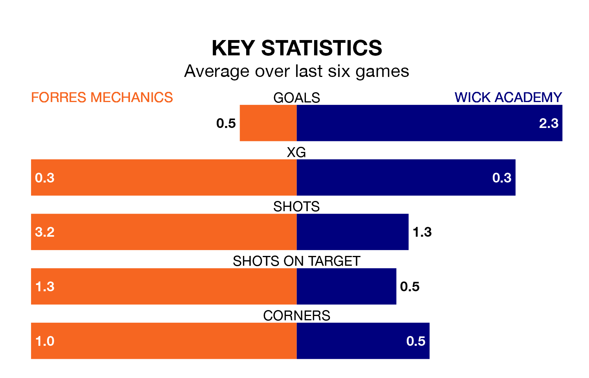

Forres Mechanics are on a terrible run ahead of hosting Wick Academy at Mosset Park on Wednesday, with just two points collected from their last six games.
Forres Mechanics have picked up two draws and four losses in their last six Highland Football League games, and face a Wick Academy side whose last six games have brought three wins and three losses.
Forres Mechanics are 16th in the table after 32 games, of which they have won five and drawn nine, earning 24 points.
Wick Academy are four places ahead of the home team in 12th, with nine wins and five draws putting them on 32 points.
In the last 10 years, Forres Mechanics and Wick Academy have played each other on 13 occasions. Forres Mechanics won three of them, Wick Academy five, and they drew five times.
On average, Forres Mechanics scored 1.9 goals and Wick Academy 2.2 in those matches.
Their last meeting was on October 4, when Wick Academy won 3-2 at home.
With 33 goals in 32 games so far this season, Forres Mechanics are the league's joint-second-lowest scorers with 1.0 goals per game. And they are conceding more than average, letting in 61 goals at a rate of 1.9 per game.
The visitors are also below average scorers, with 1.4 goals per game, compared to a league average of 1.8. They have conceded 2.2 goals per game.
Forres Mechanics's last match was on Saturday, a 4-1 loss against Brechin City.
Wick Academy beat Keith 2-0 last time out, also on Saturday.
Updated: 11:31 (UTC), 15/04/24